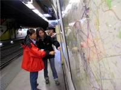
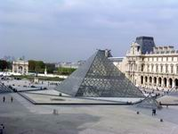
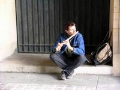
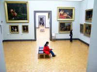
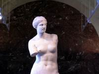
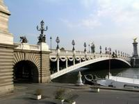
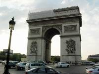
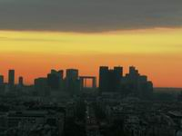
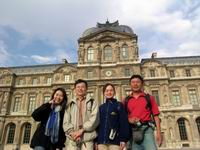

2003年9月26日 三探巴黎
羅浮宮賞畫，劉姥姥逛大觀園；
香榭大道行，名牌林立眼撩亂。
凱旋門登高，夕陽西沉無限好；
左岸喝咖啡，葡萄美酒夜光杯。
|  |
| 搭地鐵要眼明手快，頭腦清晰。重要的是方位感，否則很容易迷失方向。 |
有了巴黎三日週遊券，這裡的交通工具，任由我們搭乘，今天試著坐18號公車到Liberte地鐵站，搭乘8號地鐵到Reuilly-Diderot站，再轉1號地鐵至Palais Royal Musee de Louver地鐵站，來到羅浮宮，說實在每到一處，手拿地鐵站地圖，瞪大眼晴還在那密密麻麻的小字間搜尋時，秀蓉和三秒已看出倪端，馬上發號司令，往目的地前進，我只好趕快收起地圖，馬上跟上，以免在人群中走丟，不過說實在，還真佩服這小女子的方向感與讀圖和試圖的能耐。
羅浮宮的藝術洗禮
|  |
| 金字塔造型的玻璃屋，在龐大的古建築前建了這種新潮建築，也只有貝聿銘這位大師級的建築師才想得出來。 |
|  |
| 陽光斜照在迴廊的柱子上，有位藝人正專注的吹奏著黑管，那渾厚的聲音迴音四繞，在迴廊下的共鳴效果特別好聽。 |
|  |
| 羅浮宮內體貼的設計，走累了的遊客可以坐在中央的沙發椅上稍作休息 ，或瀏覽四周牆壁上的名畫。 |
|  |
| 羅浮宮，不能錯過的三寶之ㄧ：米羅島的「維納斯」雕像，終於看到了，也許以往看多了複製品，到了現場反而沒有粉多感動！ |
到了羅浮宮，經由里沃利街後邊側門進入方形中庭，廣場上的噴水池，在早晨的陽光照射下，噴泉顯得特別的耀眼，但畢竟還是抵不過在水池旁的一對情侶引人注目，巴黎人對情感的表現真是大方，不論在那裡都可有如入無人之地般盡情享受那二人的世界，難怪會被稱為「浪漫之都」。難怪有一首流行歌「你的白天是我的黑夜」，作詞者也許看太多街頭擁吻才想出來的也說不定！哈哈！
陽光斜照在迴廊的柱子上，有位藝人正專注的吹奏著黑管，那渾厚的聲音迴音四繞，在迴廊下的共鳴效果特別好聽，走過迴廊來到前院的廣場，一眼就看到金字塔造型的玻璃屋，在龐大的古建築前建了這種新潮建築，也只有貝聿銘這位大師級的建築師才想得出來，這種受爭議的設計，每次在報章雜誌看到時，總覺得非常突兀，但現在身處其境，反倒覺得有了這個現代的建築，讓這古老建築重生，有了新生命的感覺。
走進玻璃金字塔，搭電扶梯往地下一樓寬廣的接待大廳，因屋頂是利用透明玻璃覆蓋，自然的光線穿射而入，一點也不會感覺到陰森，一早參觀的人潮就很多，這麼大的展覽館，即使花上一天的時間，也看不完，我們先參考了一下館方提供的中文導覽圖，發現這整個宮依照凵型的建築形式，分有德農館、敘利館、黎塞留館三個館。
在來此之前，一些「先進」朋友已事先給我們建議，告訴我們到了羅浮宮，不能錯過的三寶有：達芬奇的「蒙娜麗莎的微笑」、薩摩屈拉克的「勝利女神」雕像、米羅島的「維納斯」雕像，這三件作品都在德農館，我們就先往這個館前進，以免因時間不足而漏了觀賞這重要的藝術作品。「外行看熱鬧，內行看門道」就是這個道理啦！
羅浮宮是世界最大的美術館之一，在十二世紀這裡只是巴黎的要塞，到了一七九三年，這裡被改成美術館，經過歷代國王的整建，到了十九世紀拿破崙三世將其完成如今的面貌，裡面展示的有歷代國王收藏的藝術品，至今收藏品已達二十萬件，這裡的藝術品也曾運到台灣展覽，每次展出，都造成轟動，參觀的人潮由各地湧來，如今，我們能真正的到達這些藝術品的「家」，在這高大寬敞的空間一幅幅巨大的作品，讓你目不暇給，古典畫作大都是以宮庭與神話故事為體裁，這些經過幾百年後仍保存如新，不難看出當時畫家的用心，與時代背景最佳的寫照。
「蒙娜麗莎的微笑」這件原被掛在波納帕特房間，傳聞波納帕特愛戀蒙娜麗莎，而引起他太太的醋意，後移至羅浮宮懸掛，在1911被盜，1956年遭破壞，真是命運多舛，也許就是太有名了，觀看的人特別多，當我們正納悶為何要在通道上用繩子隔開時，就發現一幅約只有20號大小畫作─「蒙娜麗莎的微笑」，正在前方，說實在的，這幅不怎麼大的「心中巨畫」，與想像的有點差距，在這展覽廳中超大型的巨作比比皆是，這幅世界名畫與他們相較之下，有點小巫見大巫，被掛在這角落不起眼的地方，但仍是魅力卻依然旺盛，這個房間還搭配有一名墨黑保鑣虎視眈眈的注視著每一位參觀者，唯恐有人對這幅身價連城的畫作有所不軌。
宮內用餐
在這難得的旅程中，能進入這世界級的藝術殿堂，如此悠閒的觀賞幾百年前留下的真跡作品，有時會還以為這是一場夢，但是肚子咕嚕咕嚕的聲音，將我喚回到現實，為了把握參觀的時間，我們在宮內二樓的餐廳解決民生問題，想來能在宮殿內用餐，雖沒有享用帝王般的饗宴，但想到能夠在羅浮宮用餐的虛榮心與幸福，心中早已感到滿足了。
坐在餐廳，點個最最便宜的有蔬菜的三明治套餐，由窗戶外望，騎兵小凱旋門就在前方，二個小時的參觀還沒走完三分之一的展覽館，等待休息之後再衝刺。
與同行的伴夥約好下午三時要理性的結束羅浮宮的拜訪，這次參觀主題大都是在繪圖的部分，至於其他古物與工藝品只有稍看一點，但因時間關係不得不轉往別的景點，真是有點可惜。
回來台灣之後，欣聞羅浮宮的一些埃及古文物將至台灣展出，而且在北中南巡迴展出，這可彌補我們此行的遺珠之憾。
杜樂麗公園
 |
| 杜樂麗公園的水池邊特殊的景觀令我們駐足，綠色的坐椅沿著池塘圍放，人們面向池溏三三二二聚坐在一起，曬著陽光，看著綠頭鴨在水中自在悠游。 |
在羅浮宮參觀了四、五個小時，兩腳已有點累，但為了探訪花都，還是要加緊腳步，協和廣場和凱旋門為下一個目標，經過羅浮宮前的騎兵小凱旋門，走進一個美麗園地，修剪整齊的花圃與兩旁種植整齊的樹木，在林間錯落的放置一些藝術雕塑，溫和的法國陽光灑落在中間的步道上，我們一邊觀賞四周景色；一邊聊天，不知不覺走到一寬廣的水池邊。
池邊特殊的景觀令我們駐足，綠色的坐椅沿著池塘圍放，人們面向池溏三三二二聚坐在一起，曬著陽光，我們也入境隨俗，找張椅子坐下，在池邊小憩一回兒，看著綠頭鴨在水中自在悠游，若有人餵食，爭先蜂擁而來；幾隻不被誘惑的白鵝，被這和咰的陽光照射得昏昏欲睡，乾脆閉起眼來，隨波逐流，當牠快飄到池邊時，就會自然醒來，趕快再游回池中央，就這樣一次又一次，真是有趣。我覺得這個地方的人和鴨鵝一樣悠閒。
當時大家只當這裡是羅浮宮前的一個小花園，回來之後一查看資料，才知這裡就是頂頂有名的杜樂麗公園，不過這種不期而遇的「艷遇」，讓我們留下深刻的印象。
協和廣場
「休息是為了走更長遠的路」，這句話在今天的我們是應驗了。剛才休息好一陣子之後，大家又鼓起精神繼續往前衝！衝衝衝！
穿過杜樂麗公園看到前面對街有一個大廣場，一支雕刻石柱，有如倒插的石中劍，矗立廣場中，亮麗的陽光把那漆成金色的塔尖照得光芒四射。
但是這裡的故事可是一點也不光彩，法國大革命時這裡被稱為「大革命廣場」，在路易十六時，皇后瑪麗安東尼和許多革命志士，都在此被處死，到了十八世紀末才被改稱為「協和廣場」。石柱上刻著這些故事的人像，算是埃及贈送給戴高樂十世的禮物。
我們轉往塞納河旁，觀賞那些橫跨在塞納河上的美麗橋樑，在協和廣場旁的橋稱為「協和橋」，這座橋的橋墩，是由巴士底監獄拆下的石塊壘砌成，這些石塊由用來限制人們行動的功能轉變成溝通兩岸人們活動的功能，如此對比的應用，對這世事真有點諷刺，讓人走在橋上更能緬懷當時革命烈士所受的苦難。
巴黎最美麗的橋─亞歷山大三世橋
|  |
| 號稱巴黎最漂亮的橋─亞歷山大三世橋，應該以「華麗」來形容它，金黃的橋柱輝煌亮眼，欄杆加以絨布滾邊浮雕顯現，1900年建造完工，是俄羅斯與法蘭西友誼的象徵。 |
沿著塞納河岸往西而行，看到號稱巴黎最漂亮的橋─亞歷山大三世橋，這是很多旅遊介紹文章中最喜歡取景的橋樑，這座橋用「漂亮」來形容似乎還不夠，應該以「華麗」來說它，金黃的橋柱輝煌亮眼，欄杆加以絨布滾邊浮雕顯現，在1900年建造完工，是俄羅斯與法蘭西友誼的象徵，因此以俄羅斯的沙皇「亞歷山大三世」命名。
將古蹟保留的如此富麗堂皇，真是令人感佩，但這似乎有點失去古蹟的味道，就像我們把一間百年古厝漆上鮮艷色彩一樣，失去了歲月的痕跡，真有點可惜。這也就像燈紅酒綠的巴黎，會讓巴黎的悠久的史蹟蒙羞一般。
河堤岸邊的畫屋與小狗
雖然感覺亞歷山大三世橋太華麗，但仍不免俗的拍了很多照片，折煞了很多的記憶卡的空間，沿著梯子走下，到河岸邊的步道，這是另外一個空間，與上面車水馬龍的大馬路相比，這裡是安靜多了，不怕有車子會衝下來，我們就可更安心取景拍照。
說來奇怪，以為是沒人住的河岸，竟然發現在上方馬路與河岸的落差間，被挖了一個門和二個窗口，這有如洞穴的住屋，前面擺了一些畫作和藝品，旁邊有一隻黑狗趴在地上，不見人看管，難不成這是狗當家的藝品店，走近一看，才發現原來主人躲在裡面喝酒，哇！這種地方也可以作生意，真是厲害，只不知這算不算是違章建築呢！
驚奇的發現「發現宮」
有人說巴黎三步一個皇宮；五步一個美術館，如果你以一步100公尺來算，還真是如此，走上橋頭，轉往香榭麗仕大道的方向，所經之處看到一棟皇宮式的建築，事前功課作得不夠，看到布條標幟有展覽的告示，大家猜它是「馬蒙坦美術館」，但時間有限，並沒有進去一探究竟，回來研究的結果，才知道我們無意間「發現」這間宮殿就是「發現宮」，真是巧合。
這附近古樹參天，走在大馬路旁，就好像走在公園內感覺，旁邊一間圓頂劇院，我們並沒有進去，只能遠遠看它一眼，也許有緣下次再來拜訪吧！
香榭大道的耐吉店
| 走在繁華的香榭大道街道上，發現一個「ˇ」的NIKE專賣店，我們眼睛為之一亮，一個箭步向前，拍下這個店面，回去讓耐吉迷的堪履者兒子，也能分享我們旅遊的新發現。 |
遠近馳名的香榭大道，這裡全名是「香榭麗仕大道」，整條街除了咖啡店之外，大部分是名牌專店，是富家女的最愛，常在書上看到一些巴黎邂逅的情節，就是穿著華麗流行的服飾，走在香榭大道上，觀賞沿街廚窗內吸引人們目光的擺飾，偶而找一家咖啡店坐下來休息，看著四週人來人往的景色，也許就這樣與坐在鄰座的法國男子有了一段異國戀情，但當我們這些鄉巴佬走在這條街上時，只有東張西望，生怕撞到熙熙攘攘的行人，馬路上車子來來往往，跟本無法感受到悠閒的氣氛。
法國是全世界服裝流行的主流地，一些設計師都會來此尋找靈感，服裝界也會由這裡人們的穿著，找到一些流行的蛛絲馬跡，但我只注意到這裡的女孩都是長髮飄逸，素雅的裝扮，服裝色彩與建築物一樣，很少是大紅大綠，以自然的中間色為主，所以這不禁讓我懷疑那些來此取經的設計師，到底學到的是什麼？怎會變出那些奇怪造型與有如調色盤般的色彩應用，難道是舞台的絢爛歸舞台，生活的素雅歸生活。
懷著鄉下佬佬遊大觀園的心態，走在這繁華的街道上，就在一個轉角處，發現一個「ˇ」的NIKE專賣店，我們眼睛為之一亮，這下可找到可以送兒子的禮物了，阿淵一個箭步向前，拍下這個店面，回去讓耐吉迷的兒子，也能分享我們旅遊的新發現。
來到這裡我們這一組藝術之旅的人馬顯然對逛名牌精品店的樂趣缺缺，為了節省腳力，我們決定坐上巴士，躲過這條誘人的街道，直達凱旋門。
凱旋門的紀念儀式
|  |
| 買了一張七塊歐元的門票，經由凱旋門的大柱腳下踩著樓梯拾階旋轉而上，這284階，讓我們走得頭昏目眩，沒想到花了七元竟然還沒有電梯可搭乘。 |
越靠近凱旋門越熱鬧，看到人群中有些穿著軍服的；也有一些穿著儀隊的服飾，看來這附近似乎有什麼活動要舉行。
隨著人潮走近地下道，來到凱旋門下，這個「ㄇ」形建築，就矗立立在香榭大道的盡頭，壁柱上雕飾著法國大革命以及拿破崙輝煌戰役的故事，在門下此時已有隊伍在那裡列隊等候，圍觀的人群愈來愈多，我們人矮，為了拍照，只好站上柱腳突出的位置。
居高臨下，才看到在凱旋門下的地上有一個圓形的火盤，一團烈火正在上面跳躍著，原來這是為了紀念第一次世界大戰中犧牲的無名戰士，所建的墓地，至今長年火光不滅，稱為「永明燈」，常有紀念儀式在此舉行。
我們等不及儀式的結束，買了一張七塊歐元的門票，經由凱旋門的大柱腳下踩著樓梯拾階旋轉而上，這284階，讓我們走得頭昏目眩，沒想到花了七元竟沒有電梯可搭乘，還真有點被騙的感覺。
快到頂樓時，有一間展覽室，我們學孫悟空的到此一遊的技倆，在這裡上了一下洗手間，結果跟在我們後面的遊客，盲從的跟進，以為頂樓由此小房間進入，真是誤導別人，實在是歹勢啦！
就在洗手間旁遇到由美國來的台灣人，當他們聽到鄉音，很高興的與我們聊了起來，這種他鄉遇故知的情形，竟然是發生在凱旋門內，真是有趣。
凱旋門上的夕陽
|  |
| 買了一張七塊歐元的門票，經由凱旋門的大柱腳下踩著樓梯拾階旋轉而上。 |
走出窄小的樓梯，來到凱旋門的頂層，在這裡可瞭望由凱旋門放射出去的十二道馬路，有如十二道光芒，這時我想為何光芒的表示都喜歡用是十二道呢？難道設計靈感是來自一年有十二個月嗎？還是這樣剛好適合每條街道的寬度？但且不管這麼多，只覺得站在這上面，整個人心胸頓時開闊起來。
由此右前方望去是看到艾菲爾鐵塔就矗立在那裡，往後方望去遠遠的有一個方形的建築洞口，那就是新凱旋門，在左前方遠眺可看到到藝術家的聖地─蒙馬特。
夕陽西下時分，由Foch大道望去，一條黃金大道就在眼前，我突然想像發現了一張藏寶圖，圖中暗示寶藏就在黃金大道的末端，那我們現在不就己找到了藏寶的地點了，哎！真是白日夢一場，看來是尋寶的電影和小說看太多了！
看著落日，逐漸由山頭沈落下去，那胭紅色的夕陽餘暉，由新凱旋門的那端方形框框襯映出來，這次巴黎之旅雖然沒時間到達那個地方，但能有機會由此看到新凱旋門的風貌，一定比到現場的感覺更加浪漫更加美妙。
迷人的夕陽讓大家不忍離去，為了捕捉美景六台相機猛按不停，想抓住這美好的景色，直到日落山頭，我們才依依不捨的離開。
浪漫的左岸咖啡
| 夕陽無限好，只是近黃昏？想到張國榮活著並不快樂以跳樓解脫，梅姑梅艷芳則因病痛相繼去世，真是令人感慨萬分，我們真的該把握當下，惜緣惜福。 |
| 巴黎的最後一夜就在左岸咖啡的浪漫氣氛下，劃上完美的句點。彼此因這段日子的互助合作搭地鐵找景點兒，讓友誼有了深厚的增長，要到離別還真有點依依不捨呢！ |
|  |
| 謝謝巴黎之旅的夥伴們：「雅淑」共賞的魅影、溫文儒雅的三秒、冷靜熱心的秀蓉、熱情奔放的有機米，期盼有緣再相聚。 |
不論「左岸咖啡」是否商人抄作出來的，就像巴黎大家稱它是「花都」一樣，既然來到這裡就鐵定要感受一下這些名詞的由來，我們搭上巴士到Champ-Elysess Clemenceau站，轉搭1號地鐵至靠近西堤島的Chatelet站，再轉4號地鐵過了塞納河，到塞納河左岸的Saint Michel站下車。
聖米榭爾廣場就在塞納河的左岸，這裡有很多喝咖啡的地方，在鵝黃色的燈光螢照下，比起白天的感覺好多了，白天人們大家都喜歡坐在咖啡店的外面曬太陽，在有限的馬路空間擠上一角，與行人、車子搶位置，所以坐位在很擠，在小小的咖啡桌子邊，以一字排開的方式面對馬路喝咖啡，這種情景實在真是難以讓人將「左岸咖啡」與「浪漫」二字聯想在一起。東方的「浪漫」喜歡帶點清靜無塵，西方的「浪漫」好像要有熱鬧豪華。
但是到了晚上人們就不喜歡坐在外面，大家擠進屋內，避開外面的寒風，反倒是我們這些從台灣來的遊客，覺得這時坐在外面，桌上點著蠟燭，涼風吹來才覺得浪漫，民族性的不同，由此可見，我們堅持坐在外面，六個人點了五個大披薩、一瓶紅酒，附餐當然要點咖啡，否則怎麼算是到左岸來喝咖啡呢！
在大家再三討論的結果，訂了五個大披薩，分成六份，每個人分吃五種口味的披薩，再叫了一瓶紅酒，細細的品嚐不同口味的披薩，在涼風中喝著紅酒，望向彼岸在黑夜中打上昏黃燈光的聖母院，有一種矇矓的美。
在燭光下，花了二個小時的時間，吃完這一餐，讓我們感受到了滿足，巴黎的最後一夜就在左岸咖啡的浪漫氣氛下，劃上完美的句點。彼此因這段日子的互助合作搭地鐵找景點兒，讓友誼有了深厚的增長，要到離別還真有點依依不捨呢！
巴黎！浪漫是你的名字，古蹟景點是你的生財之道，美術館是你的無價之寶，咖啡美食是你滿足人們的饗宴，香榭名牌又讓一批人樂此不疲。
短短二天半的緊湊行程，讓我們初淺的認識了巴黎的輪廓，雖說巴黎沒有湖光山色，但藝術古蹟卻已足夠讓我們回味無窮，有生之年，奉勸大家至少還是該到巴黎走一趟。
是互道離別的時候了，親愛的朋友和巴黎，我在內心深處吶喊著：
珍重！再會！